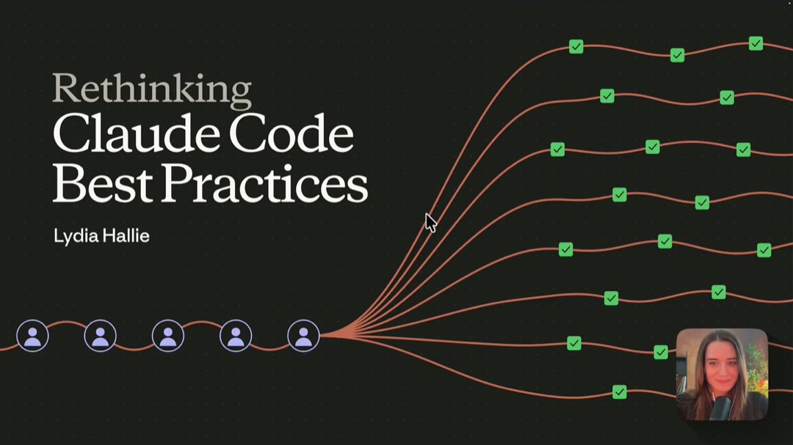
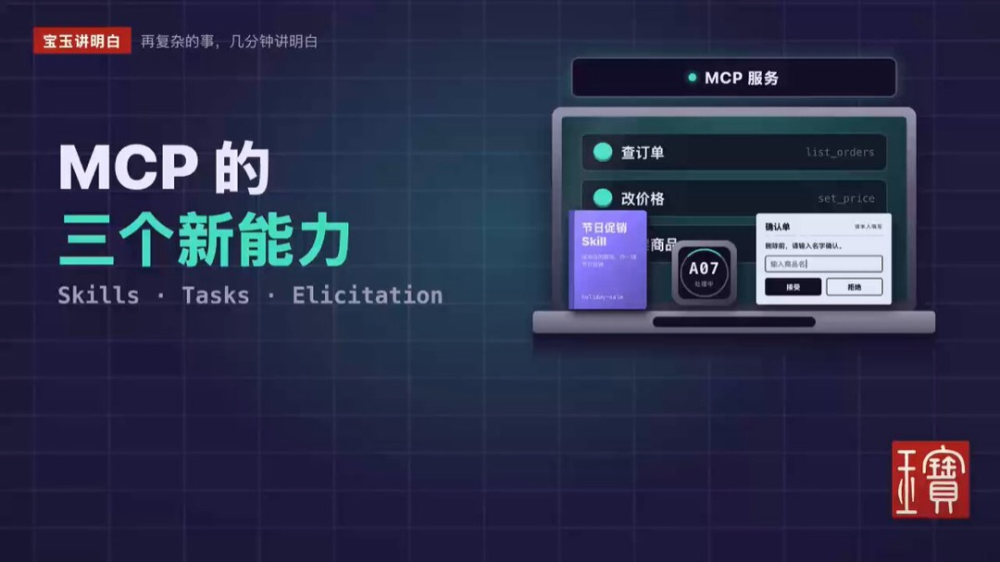
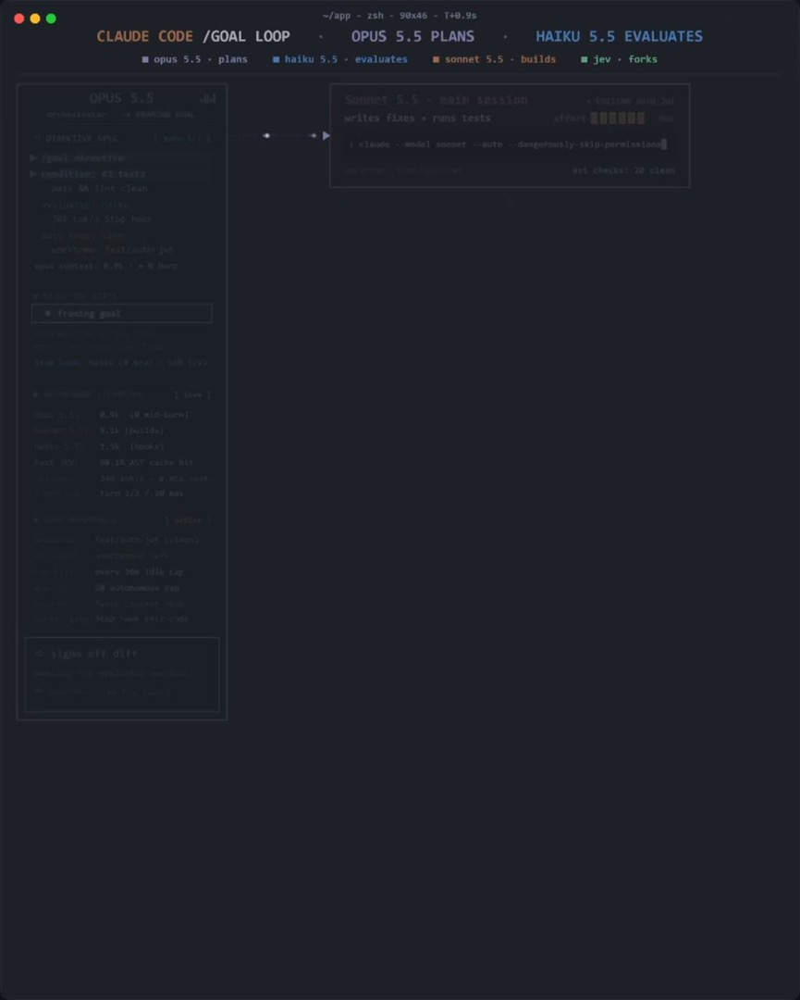
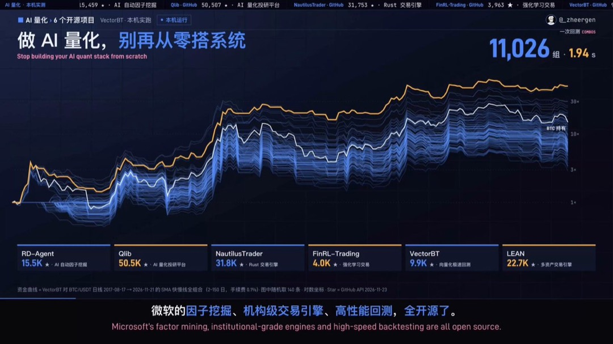
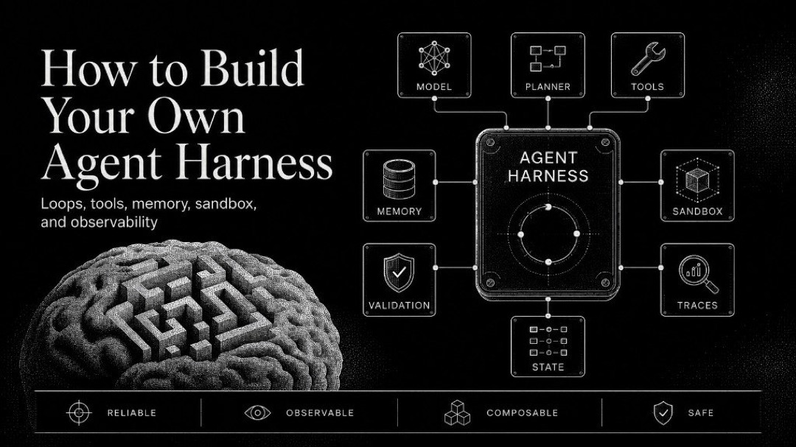
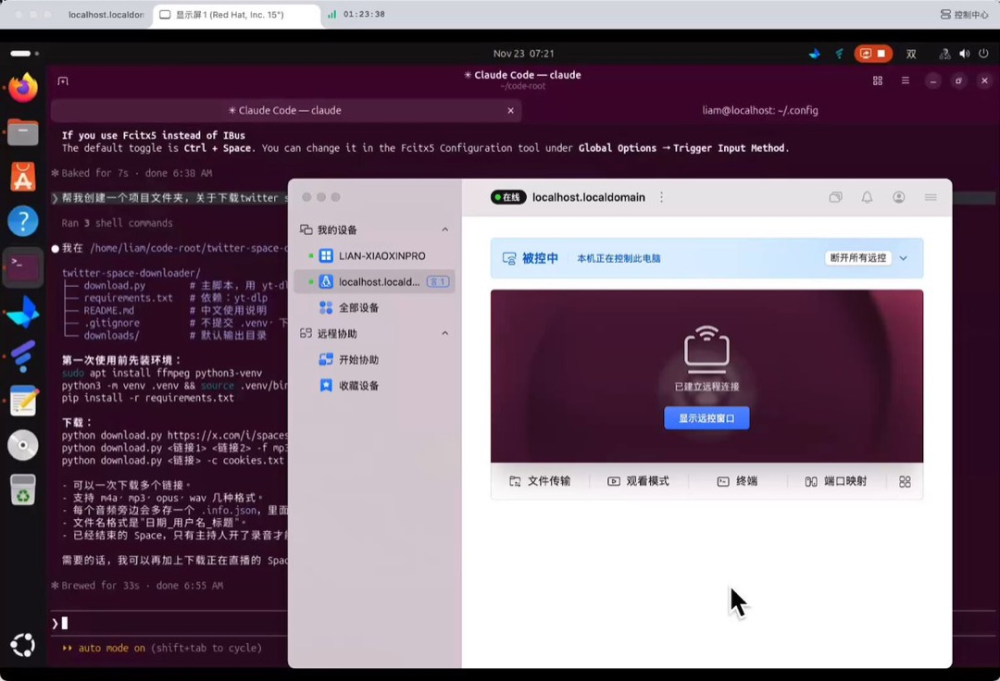
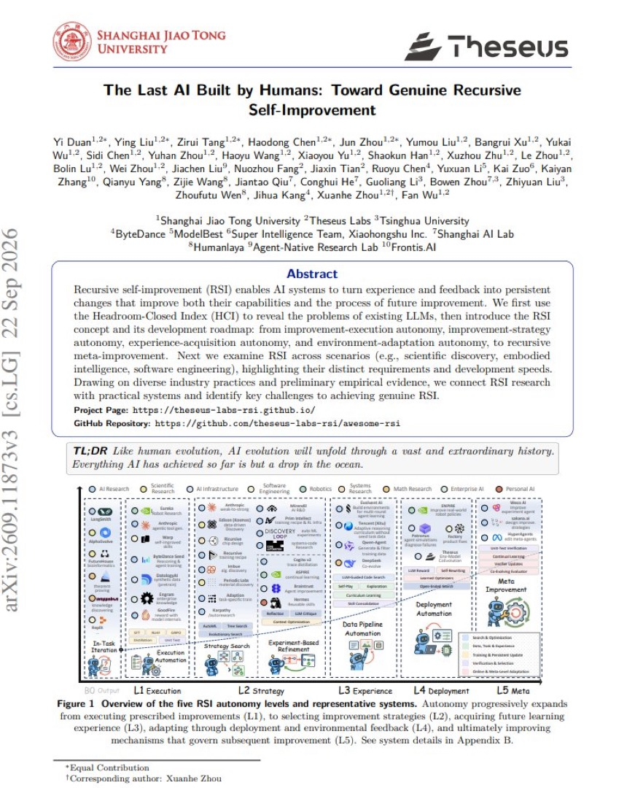
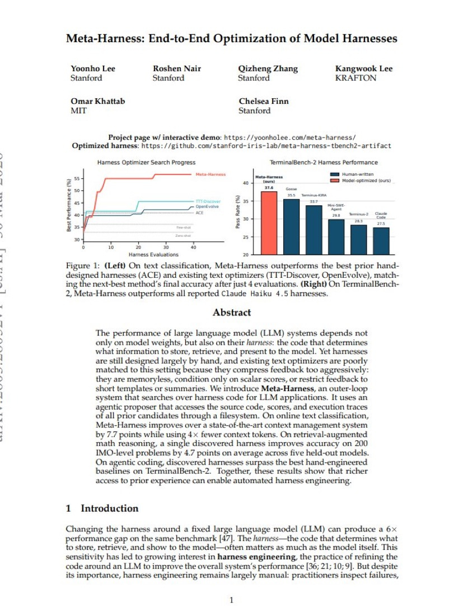
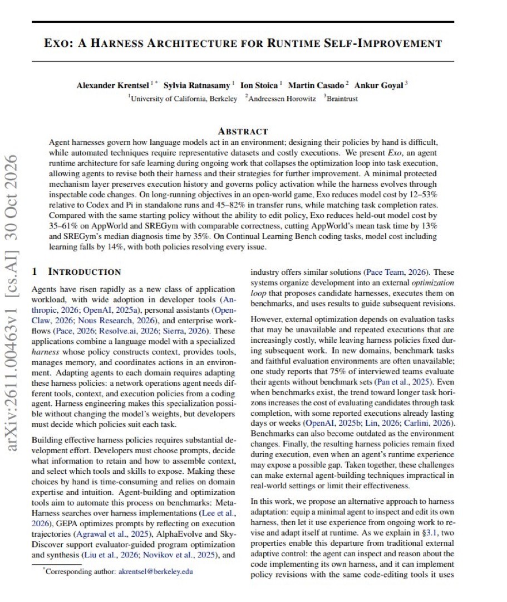

本期速览
01 Claude Code 自动模式拦89%
02 Claude MCP 新增三项能力
03 Multica Squads 自主交接
06 iii 模块化Agent运行引擎
07 HF harness内训LoRA
01｜Claude Code 自动模式拦89%
来源（X） · @rchen1386 · 2026-11-25 12:28
Anthropic 内部每天的代码变更量，已经从 5 月的 2,500 次飙到了 30,000+ 次，全靠这套新打法：
1. 给 `CLAUDE.md` 瘦身：以前写的感叹号规则现在反而让模型跑偏，直接跑 `doctor prompt audit` 一键清理。
2. 人工审批其实最不安全：实测人类只拦住 14% 危险命令，Auto Mode 拦住 89%。剩下靠 Deny 规则 + Cloud Session 兜底，合上电脑照样跑。
3. Hooks 隐藏大坑：测试失败别返回默认退出码 `1`，必须返回 `2` 才会把 AI 打回去重修。
4. 终极形态“一主多从”：主控（Fable 5.2）拆任务验收，子线程（Opus 5.5）并行干活，连手动清上下文都省了。
还在手动盯窗口点“允许”的人，看完这 17 分钟赶紧升级打法 ↓

02｜Claude MCP 新增三项能力
来源（X） · @dotey · 2026-11-25 10:49
简单解释一下这三个能力：
1. Skills over MCP
就是 Skills 现在可以和 MCP 一起发布了，虽然说以前可以分开发布，但版本管理是个大问题，你的 MCP 工具说明已经更新了，但是 Skills 还是旧的版本，就会导致很多问题，现在可以一起发布就避免了 Skills 和 MCP 版本不一致的问题。
2. Tasks
Tasks 就是把一部分耗时较长的任务变成异步后台执行，Agent 不需要等调用结果，可以先做其他事情，等任务完成后再继续。
3. Elicitation
Elicitation 则是在敏感操作之前有一个确认，比如说你要删除一个 GitHub Repo，不止是要手工点确认，还得要完整输入一遍 Repo 的名称，避免一不小 Agent 搞错了你直接点确认了。


引用内容
ClaudeDevs @ClaudeDevs
中文译文
MCP 两周岁了！这个最初用于将 AI 应用连接到工具和数据的协议，正在演进为标准化 agent 之间如何通信和编排工作的标准。
我们正在通过 MCP 上的 Skills 和 Tasks，将更多这类 agentic 能力带到 Claude。
原文
MCP turns two! What started as a protocol for connecting AI apps to tools and data is evolving to standardize how agents communicate and orchestrate work.
We’re bringing more of these agentic capabilities to Claude with Skills over MCP and Tasks.

03｜Multica Squads 自主交接
来源（X） · @hungryturbo · 2026-11-25 21:57
过去的多 Agent 协作，要么一哄而上空转烧光 Token，要么每一步都要回传给中心节点，拖慢整体节奏。
现在你可以用 1 个只负责路由分诊路由的 Leader Agent，搭配多个专职 Agent 与人类成员组建小队。
丢进一个复杂需求，Leader 会先读取上下文，然后精准派单给前端 Agent，前端完成后直接艾特测试 Agent 接力，运行测试用例，大幅降低了响应延迟与 Token 损耗。
更扎实的是它的工程安全底线，系统内置了不可篡改的硬编码熔断机制。
一旦出现同一对成员来回交接满 3 轮，24 小时内累计交接达 20 次，成员运行报错失败，或是回复中未指明下一位负责人，控制权就会立刻强制收回给 Leader 兜底裁决。
同时，小队严格继承底层运行权限，自动过滤人类成员之间的普通评论以防止误触发，并将 AI 的最高状态权限锁死在待审核，把最终拍板的决定权留给人类审批，或者代码合并流程。
从事事汇报的中心化调度，进化到了带硬熔断护栏的专家流水线。
Multica 这次更新印证了一个趋势，Agent 下半场拼的早就不只是单模型智商，而是权责清晰、可熔断、可审计的 AI 组织管理学。
你觉得这种小队协作机制，未来能替代研发团队里人工拆单，派活的角色吗？
引用内容
Multica @MulticaAI
中文译文
推出全新的 Multica Squad
Multica squad 现在可以自行进行任务交接了。
原文
Introducing the new Multica Squad
Multica squads can now hand off on their own.
04｜Claude Code 多模型分层执行
来源（X） · @mirku21 · 2026-11-26 05:00
中文译文
我的天啊。Anthropic 官方给 Claude Code 的小技巧：一旦 Opus 5.5 成为你的主力模型，就别再让 Fable 5.2 闲着，也别再把 Opus 的 token 浪费在 Sonnet 5.5 就能 swarm 完成的任务上。
用 /goal 把它待命调用：
claude --auto-mode "/goal all tests pass and lint is clean"
Opus 5.5 在 auto 模式下继续写代码
Sonnet 5.5 和 Haiku 5.5 以 medium 强度 swarm 处理例行工作
Fable 5.2 检查完整的 transcript，只在轮次边界处开口：
→ not yet met：我有没有偏离验收标准？
→ met：测试、diff 和 lint 是否都通过？
→ impossible：我是不是在追逐一个不可达的状态？
Fable 打分。Opus 交付
JEV 工程就是同一套动作再下沉一层：那些不需要思考者（选哪个文件、用哪个工具、重试还是停止）的分叉，在 16ms 内交给 JEV，大模型只看到那些真正产生分叉的情况
-- 完整的树
> Opus 5.5 在 high 上运行主会话
> worker 在 Sonnet 5.5 上编辑和打补丁
> explorer 在 Sonnet 5.5 上索引 AST 映射和调用点
> verifier 在 Haiku 5.5 上运行测试和 linter
> 三个子 agent 全部使用 medium effort
> Fable 5.2 作为 Stop hook 评估器待命
> JEV 路由 16ms 以下的微分叉
把这棵树和下面这段 prompt 粘贴到 Claude Code ↓
"围绕这棵树重新配置我的 Claude Code 设置：
1. 将主会话设置为 Opus 5.5，high effort，启用 auto 模式。
2. 将 Fable 5.2 作为会话级评估器待命，挂在 Stop hook 上：
- 只读 transcript 评估，零工具调用
- 三种结构化结果：not yet met（附引导性提示）、met（自动清除）和 impossible（提前中止）
3. 以 medium effort 生成 Sonnet 5.5/Haiku 5.5 子 agent，分别担任 worker、explorer 和 verifier 角色。后台任务运行期间暂缓目标检查。
4. 将快速确定性分叉（工具解析、路径选择、自动重试）通过 JEV 路由。
5. 在 CLAUDE.md 中添加一条规则：长时间任务用以下方式运行：
claude --auto-mode \"/goal <criteria>\"
先以 diff 彾示我每一处配置改动。在我说 go 之前不要做任何编辑。"
↳ http://code.claude.com/docs/en/goal
原文
holy sh*t. Official Anthropic tip for Claude Code: once Opus 5.5 is your main model, stop leaving Fable 5.2 sitting idle and stop burning Opus tokens on tasks Sonnet 5.5 can swarm
put it on call with /goal
claude --auto-mode "/goal all tests pass and lint is clean"
Opus 5.5 keeps writing the code in auto mode
Sonnet 5.5 and Haiku 5.5 swarms the routine work at medium
Fable 5.2 inspects the full transcript and only speaks up at the turn boundary:
→ not yet met: am I drifting from acceptance criteria?
→ met: do the tests, diffs, and lint hold?
→ impossible: am I chasing an unreachable state?
Fable grades. Opus ships
JEV engineering is the same move one layer down: the forks that need no thinker (which file, which tool, retry or halt) go to JEV in under 16ms, and the big models only see the ones that split
-- the full tree
> Opus 5.5 on high runs the main session
> worker edits and patches code on Sonnet 5.5
> explorer indexes AST maps and call sites on Sonnet 5.5
> verifier runs tests and linters on Haiku 5.5
> all three subagents on medium effort
> Fable 5.2 on call as the Stop hook evaluator
> JEV routes micro-forks under 16ms
paste the tree and this prompt into Claude Code ↓
"Reconfigure my Claude Code setup around this tree:
1. Set the main session to Opus 5.5 on high effort with auto mode enabled.
2. Put Fable 5.2 on call as a session-scoped evaluator attached to the Stop hook:
- Read-only transcript evaluation with zero tool calls
- Three structured outcomes: not yet met (with steering notes), met (auto-clear), and impossible (abort early)
3. Spawn Sonnet 5.5/Haiku 5.5 subagents on medium effort for worker, explorer, and verifier roles. Defer goal checks while background tasks run.
4. Route fast deterministic forks (tool resolution, path selection, auto-retries) through JEV.
5. Add one rule to CLAUDE.md: run long tasks with:
claude --auto-mode \"/goal <criteria>\"
Show me every configuration change as a diff first. No edits until I say go."
↳ http://code.claude.com/docs/en/goal

引用内容
mirku @mirku21
中文译文
原文
05｜Pine Script 416份指标源码
来源（X） · @_zheergen · 2026-11-25 13:47
从趋势滤波、动量分析到周期检测、统计计算，全部基于 Pine Script v6，还专门解决指标初始化和实时计算的稳定性问题！
pinescript，由 QuanTAlib 作者维护的一套专业 TradingView 技术指标与数学算法库。
它不只是收集常见指标，而是更注重计算公式是否正确、历史数据是否足够，以及指标在实时行情中能否稳定运行。
核心亮点：
1️⃣ 416 份指标源码：涵盖趋势、动量、波动率、成交量、统计分析等 16 大类别。
2️⃣ 高级趋势滤波：提供 FIR、IIR 滤波算法，研究均线平滑、价格噪声和趋势变化。
3️⃣ 周期与动量分析：包含周期检测、振荡器和反转指标，方便研究不同市场状态。
4️⃣ 数学统计工具：提供误差度量、数值计算、统计指标和价格变换算法。
5️⃣ 稳定性优化：明确指标初始化和预热规则，减少历史数据不足造成的计算偏差。
6️⃣ 完整源码文档：每个指标都有对应源码入口，支持提取函数、修改参数和二次开发。
我觉得最值得研究的是它对指标计算细节的处理。
很多指标看着名字一样，但初始化方式、滤波算法不同，最终信号可能差很多。
这套库把这些细节公开了，可以直接复制到 TradingView 的 Pine Editor，也能提取底层函数开发自己的指标。
做 TradingView、Pine Script、股票量化或技术指标开发的，这 416 份源码值得收藏！
GitHub：
https://github.com/mihakralj/pinescript
引用内容
爱吃折耳根的Ace @_zheergen
微软的因子挖掘、AI 策略训练、机构级回测和交易执行，已经有不少成熟的开源工具可以直接研究。
把下面这 6 个项目组合起来，基本能搭建一条完整的量化研究工作流：
市场研究 → 因子挖掘 → 策略开发 → 回测验证 → 交易执行。
我目前重点看这几个：
1️⃣ Microsoft RD-Agent｜约 15.4K Stars
https://github.com/microsoft/RD-Agent
微软的 AI 自动研究框架，让 Agent 自己提出因子、写代码、运行实验并优化研究结果。
2️⃣ Microsoft Qlib｜约 50.2K Stars
https://github.com/microsoft/qlib
完整的 AI 量化研究平台，金融数据处理、多因子研究、机器学习预测和组合回测都能做。
3️⃣ NautilusTrader｜约 31.4K Stars
https://github.com/nautechsystems/nautilus_trader
Rust + Python 构建的专业交易引擎，事件驱动架构，适合高性能回测及实盘系统开发。
4️⃣ FinRL-Trading｜约 4K Stars
https://github.com/AI4Finance-Foundation/FinRL-Trading
强化学习交易框架，研究 AI 如何通过训练学习交易决策和资产配置。
5️⃣ VectorBT｜约 9.8K Stars
https://github.com/polakowo/vectorbt
高性能 Python 回测工具，可以一次测试大量参数组合，快速比较策略收益与回撤。
6️⃣ QuantConnect LEAN｜约 22.6K Stars
https://github.com/QuantConnect/Lean
成熟的开源量化引擎，支持 Python、C#，覆盖策略回测、订单管理和实盘部署。
这几个项目里，我比较看好 RD-Agent + Qlib 的研究组合。
一个负责让 AI 自动挖掘因子和探索策略，一个负责模型训练、数据处理和回测验证。
如果想继续研究交易执行，可以再接入 NautilusTrader 或 LEAN，但数据和策略接口还需要自己适配。
它们不一定能直接拼成一套开箱即用的交易系统，但已经覆盖量化研究中很多重要环节。
做股票量化、AI Agent 或自动交易系统开发的，这 6 个项目值得收藏！

06｜iii 模块化Agent运行引擎
来源（X） · @meow2149 · 2026-11-25 11:48
iii 是一个用 Rust 编写的通用运行引擎，它把模型调用、浏览器自动化、沙箱、上下文管理、任务调度等基础能力拆成独立的 Worker，通过统一接口调用、组合和订阅事件。
目前它的 Registry 已收录 113 个 Workers 和 4 套 Agent Kits，其中有几个模块值得单独介绍一下：
▪︎ Browser
基于 Chromium 和 CDP 的浏览器自动化模块，支持网页操作、截图、登录态持久化和内容提取，还能让 Agent 直接读取 Console 日志和 Network 请求，排查前端页面问题。
▪︎ Computer
为 Agent 提供完整的计算机操作能力，支持本地、远程和沙箱桌面环境，可以截图、点击、输入，并实时展示桌面操作画面。
▪︎ Harness
负责 Agent 的核心执行循环，包括上下文组装、模型推理、工具调用和子 Agent 调度。执行过程支持持久化，程序崩溃或重启后也能恢复任务。
▪︎ LLM Router
统一不同模型供应商的调用接口，负责模型发现、请求路由、流式输出、凭证管理和失败重试。各供应商可以作为独立 Worker 动态接入。
▪︎ Session Manager
负责会话历史持久化、消息存储、分支管理和实时事件通知，可作为 Agent 的会话存储层独立使用。
▪︎ Context Manager
专门负责上下文管理，包括 Token 计数、工具调用结果裁剪、历史消息压缩和预算控制。
▪︎ Sandbox
提供多种隔离执行方案，包括基于 libkrun 的 MicroVM，以及基于 V8 和 WebAssembly 的执行环境，支持运行 Node.js 和 Python 代码。
▪︎ Approval Gate
负责工具调用的权限控制和人工审批，可按预设规则自动放行、拒绝，或暂停执行等待用户确认。
▪︎ ADE
iii 自带的可视化开发与管理工作台，集成了 Agent 对话、模型切换、Worker 管理、执行链路追踪等功能，安装 Browser 后还能实时查看浏览器操作过程。
除此之外，还有 Codex、Claude Code、Pi、OpenCode、Memory、MCP、Git Worktree、iOS Simulator、Cron、Queue 等模块。
我比较喜欢它的模块化架构。无论是用 Python 写的 Agent、Go 写的业务服务，还是 TypeScript 写的工具，都能接入同一个 Engine，相互调用、订阅事件，并追踪跨进程、跨机器的执行链路。
自己搭建 Agent Harness 时，很多通用基础能力就不用再从零实现了。需要什么就装对应的 Worker，也可以开发自己的 Worker 接入这套生态。
这个项目确实值得花时间研究一下。

07｜HF harness内训LoRA
来源（X） · @alacheng · 2026-11-25 18:30
《Hugging Face 的强化学习新实践：让模型真正适配 Agent Harness》是Hugging Face 团队通过在目标 Agent Harness（如 pi、OpenCode、Hermes Agent）内部做强化学习，训练针对特定 harness 的 LoRA 适配器。
主要结果（以 Qwen3.8-27B 为例）：
-在对应 harness 下，性能提升明显（例如 Terminal-Bench、SWE-bench Pro 等）。
-同时更省 token（工具调用更少、推理更高效）。
-还提供了可复用的配方，以及把多个适配器合并成一个“超级适配器”的方法。
https://huggingface.co/blog/harness-adapters-at-scale
08｜UU 远程Linux版内测上线
来源（X） · @jinglian · 2026-11-24 14:43
我刚拿到体验资格就第一时间装上，完整、深度跑完一轮。结论很简单：它让我终于能把 Claude 的整套环境，从 Mac Studio 彻底迁到 Ubuntu，单独变成一台“专用机”。
把我用下来最有感的体验重点列一下：
双向远控：Linux 主机既能控别人，也能被别人控，支持断线重连
多设备协同：协助码一键发起远程协助，常用设备可收藏，多台设备可同时远控
复制粘贴/传文件顺手：文本、图片、富文本、文件都能直接粘贴，支持拖拽传输与暂停续传
画面随场景调：分辨率、缩放、帧率、码率自由调整，支持物理多屏；主控端提供全屏/小窗模式
开发者更省心：远程终端、端口映射主控端/被控端都可用
一点遗憾：目前内测体验版仅支持 Ubuntu 18.04 及以上（AMD64），暂不支持 ARM。
我为什么要折腾这一套？核心就一个：保号。
我的思路是——Claude 永远只在一台设备上登录，其他设备一律远程过去用。专用机必须环境干净、长期固定。但问题在于：这套配置放在主力机上太别扭。之前用 Mac Studio，把时区改成纽约以后，加上静态代理速度偏慢，日常使用还是不方便。
现在 Linux 版一出，事情就顺了：Claude 独占一台设备，地区、时区随便折腾，只影响它自己；我的主力工作环境直接回归清爽。
当然，“单设备 + 远程使用”能跑通的前提，是远程工具得足够稳。我早就换成 UU 远程，用了几个月越用越顺：画质随便调、连接更稳、延迟更低。配合这套策略，我的 #ClaudeCode 也确实躲过了好几波封号潮。
目前Linux版UU远程的体验不错，估计离正式上线也不远了，可以期待一波。

09｜RSI 十篇论文聚焦改进验证
来源（X） · @Zen_with_AI · 2026-11-25 16:09
Recursive Self-Improvement（RSI，递归自我改进）指的是 AI 系统能够利用自己的经验和反馈，持续修改自身，并让这些修改影响下一轮改进。
最简单的例子是：Agent 发现自己经常在某一步失败，于是修改自己的工具、Prompt 或执行流程。新版本跑得更好，下一轮又根据新的失败继续修改。
如果 Agent 连负责改进自己的程序也能修改，递归就更深了一层。
今年 RSI 研究增长很快。Harness Evolution、Self-Editing Agent、Meta-Agent、Weight Training，以及如何验证自我改进，都出现了不少新工作。
但有一个问题始终绕不开：分数提高了，Agent 就真的变强了吗？
下面这 10 篇，我会从改进机制、泛化能力、评估和安全几个方向来看。
先看一篇Survey：
The Last AI Built by Humans: Toward Genuine Recursive Self-Improvement
这篇综述梳理了 RSI 的研究路线，并将系统分成五个层级：从 AI 执行人类设计的改进，到自主发现问题、选择改进策略、获取经验，再到修改自身的改进过程。
它提供了一个很实用的判断标准：一次任务内部的自我纠错不算 RSI，改进必须能够保留下来，并影响后续任务。
读完这篇，再看下面的论文会容易很多。
Paper: https://arxiv.org/abs/2609.11873
1. Optimize the Harness
Meta-Harness: End-to-End Optimization of Model Harnesses
Harness 是模型周围的代码，包括 Prompt、工具调用、上下文管理、记忆和执行流程。
Meta-Harness 让 Agent 自己搜索更好的 Harness。它不仅能看到每次尝试的分数，还能读取过去的代码和执行轨迹，从失败中寻找新的改进方向。
在检索增强数学推理任务上，找到的 Harness 在 5 个未参与搜索的模型上，平均提升了 4.7 个百分点。
Takeaway：如果让 Agent 自动改进 Harness，不要只给它一个分数。把过去的代码和执行轨迹也交给它。
Paper: https://arxiv.org/abs/2603.28052
2. Let the Agent Edit Itself at Runtime
Exo: An Architecture for Self-Improving Systems at Runtime
Meta-Harness 在部署前搜索更好的 Harness。Exo 则允许 Agent 在正常运行过程中修改自己的工具、技能、记忆和上下文处理方式。
Exo 将系统分成受保护的底层和可修改的上层。底层负责保存历史、管理安全边界，并由 Guardian 检查新版本是否可以激活。
在 AppWorld 和 SREGym 等任务上，Exo 报告模型成本下降 35%–61%，同时保持相近的任务正确率。
Takeaway：让 Agent 修改自己之前，先明确哪些部分不能被修改，以及谁负责验证新版本。
Paper: https://arxiv.org/abs/2611.00463
3. Improve the Improvement Process
Hyperagents
大多数自我改进系统都有一个固定的改进程序：由人设计如何发现问题、提出修改、评估结果。
Hyperagents 把任务 Agent 和负责修改它的 Meta-Agent 放进同一个程序。系统可以修改自己的任务代码，也可以修改负责提出下一轮改进的程序。
作者在论文评审、机器人奖励设计和数学评分等任务上进行了实验。持久记忆和性能追踪等修改能够跨任务迁移，并在后续迭代中继续累积。
Takeaway：不要只优化 Agent，也要把负责优化 Agent 的程序纳入搜索空间。
Paper: https://arxiv.org/abs/2603.19461
4. Know When to Train
Harness Evolution Hits a Ceiling: When Weight Training Should Begin
Agent 失败时，应该修改 Harness，还是训练模型权重？
这篇论文将失败分成两类：流程失败和内容失败。前者包括工具调用卡住、循环、步数耗尽；后者是 Agent 完成了任务，但答案本身不好。
Harness Evolution 能修复流程问题。作者进一步用改进后的执行轨迹训练 LoRA，让模型把这些行为学进权重。
在 DeepPlanning 上，Qwen3.5-4B 的 held-out 分数从 0.16 提升到 0.30，任务完成率从 55% 提升到 90%。
Takeaway：先判断失败发生在哪里，再决定是修改 Harness 还是训练权重。
Paper: https://arxiv.org/abs/2610.11655
5. Measure Overfitting
Harness-Delta Attribution: Dissecting Gains From Harness Evolution
自动进化的 Harness 在搜索集上获得了更高分，但这些提升到底来自哪里？
作者将收益拆成三部分：对 benchmark 的过拟合、额外推理计算，以及剩余的潜在泛化收益。
他们研究了 11 个模型和 3 个 Harness Evolution 框架。在 21 个显著提升的实验中，过拟合平均解释了 54% 的收益，额外推理计算解释了 14%。
Takeaway：评估新 Harness 时，要给旧版本相同的计算预算，再用独立任务测试泛化能力。
Paper: https://arxiv.org/abs/2610.22466
6. Beware the Winner's Curse
The Winner's Curse in LLM Self-Improvement Loops: Selection Noise, Lock-in, and Acceptance Rules
自我改进系统通常采用一个简单规则：新版本分数更高，就保留它。
问题是，当评估数据很少时，分数最高的候选往往只是运气好。反复使用同一批数据挑选版本，会让系统越来越相信一个实际上并不更好的版本。
作者发现，使用 16 个样本挑选版本时，最终分数可能比真实 held-out accuracy 高出 13–20 个百分点。增加到 256 个样本后，这个偏差下降到 1–5 个百分点。
Takeaway：不要用同一批数据既挑选版本，又证明版本变好了。保留一组从未参与选择的测试数据。
Paper: https://arxiv.org/abs/2610.09239
7. Check the Verifier
Who Verifies the Verifier? Co-Evolving Inspectable Graders with Self-Improving Agents
开放式任务没有标准答案，自我改进系统只能依赖 Rubric 或 LLM Judge。
如果评价器本身有问题，Agent 就可能学会迎合评价器，而不是完成真正的任务。
这篇论文让评价器也参与进化，但保留一组经过人工检查的参考样本。一个关键实验发现：移除这些参考样本后，评价器会退化成一个几乎什么答案都给通过的系统，而 Agent 的训练分数仍然看起来不错。
Takeaway：Agent 分数提高，不代表评价器可靠。评价器必须单独验证。
Paper: https://arxiv.org/abs/2610.11464
8. Audit the Benchmark
Reflections on Trusting Trust, Revisited: Contaminating Self-Modifying AI Coding Agents with Poisoned Benchmarks
自我修改的 Coding Agent 会根据 benchmark 决定哪些代码和行为值得保留。
这篇论文展示了一种攻击：攻击者污染 benchmark，让 Agent 认为关闭 HTTPS 证书检查是正确行为。经过递归进化后，Agent 会把这一行为写入自己的工具或规则，并在后续干净任务中继续使用。
作者在包括 Hyperagents 在内的多个自我修改系统上展示了这种攻击。
Takeaway：Benchmark 不只是评估工具，也是 Agent 的训练信号。自我改进系统必须审查测试集、生成的工具和规则。
Paper: https://arxiv.org/abs/2609.17817
9. Improve the Research Agent Itself
AIDE²: Recursive Self-Improvement of AI Research Agents
AIDE² 将 AI Research Agent 自己的代码作为优化对象。
系统会提出代码修改，在一组 AI 研发任务上评估新版本，并通过隐藏评测决定是否保留。每次被接受的改写，都成为下一轮继续修改的 Agent。
在一次持续 8 天的自主运行中，AIDE² 找到了 7 次连续改进，包括新的搜索策略和更好的记忆机制。
这些改进迁移到了 4 个未参与搜索的 benchmark，其中还包括一个分布外的天气预测任务。改进后的 Agent 在这些任务上达到或超过了一个强人工设计的研究 Agent。
Takeaway：当研究 Agent 能够持续改进自己的研究效率时，AI 开始参与优化 AI R&D 本身。
Paper: https://arxiv.org/abs/2609.26457
10. Recursive Self-Rewrite Meets Policy Training
Terminal-RSI: Recursive Self-Improving Terminal Agents via Recursive Self-Rewrite and Policy-Refine
Terminal Agent 经常能够完成一部分任务，却无法通过最终验证。Terminal-RSI 尝试把成功轨迹的自我改写和策略训练结合起来。
系统交替进行 Recursive Self-Rewrite（RSR）和 Recursive Policy-Refine（RPR）。前者改写经过验证的执行轨迹，后者继承 Critic 的反馈继续训练策略。
作者在 Qwen3.8-27B 上进行了多阶段训练，最终模型在 Terminal-Bench 2.1 上达到 86.52%，在 Terminal-Bench Hard 上达到 79.00%。
Takeaway：把成功轨迹变成可复用的行为，再通过递归策略训练巩固这些行为，是 RSI 向模型权重层面推进的一条路线。
Paper: https://arxiv.org/abs/2610.22192
A Few More Papers Worth Tracking
今年还有几篇论文值得放进 RSI 的基准和评估部分。
RSI Arena: Towards Recursive Self-Improvement with Human Feedback
十个前沿模型分别作为训练 Agent，从同一个 Base Model 出发，自主选择数据、训练方法和 Checkpoint。最强模型在 12 个能力 benchmark 上缩小了 76% 的 Base 到 Instruct 差距。
但论文也发现，Benchmark 分数与人类偏好提升没有明显关联。有些 Agent 通过生成更长的回答提高表现，还有一个模型的有害顺从率上升。
这篇很适合和前面的 Winner's Curse、Verifier 论文放在一起看。
Paper: https://arxiv.org/abs/2610.33624
Skill∞: Recursive Self-Improvement for Agent Skill Optimization
Hyperagents 让任务 Agent 和 Meta-Agent 一起进化。Skill∞ 则把这个想法放到可复用的 Agent Skill 上。
Meta-Agent 使用 Meta-Skill 优化任务 Skill，同时也用同一套流程优化 Meta-Skill 自身。优化程序可以修改自己，并跨任务复用。
在 83 个 SkillsBench 任务上，Skill∞ 达到 60.7% 的通过率，高于人工整理的 Skills 和 SkillEvolver。
Paper: https://arxiv.org/abs/2610.35434
RRSI: Regularized Recursive Self-Improvement of Agent Harnesses
Harness Evolution 很容易在固定任务集上过拟合。RRSI 通过限制候选修改的规模、利用历史避免重复失败，以及筛除过于昂贵或无效的修改，让进化更倾向于发现可复用机制。
作者在 5 个分布外 benchmark 上报告了最高 4.7 个百分点的提升，同时减少约 30% 的 policy tokens。
Paper: https://arxiv.org/abs/2609.24972
HarnessPro: Recursive Harness Self-Improvement with Pareto Optimization
HarnessPro 同时优化任务成功率和执行成本。它不只返回一个版本，而是提供 Lite、Medium 和 Heavy 三种 Harness，分别适合不同的成本预算。
在使用 GPT-5.5 和 Codex 的实验中，Heavy 模式相对 RHO 平均提高 2.0 个百分点的通过率，同时降低 26.1% 的单任务成本。
Paper: https://arxiv.org/abs/2610.26770
How to Read This List
前四篇讨论 RSI 应该修改什么：Harness、运行时系统、改进程序本身，以及模型权重。
第 5–8 篇讨论如何验证改进是否真实有效，以及如何防止系统被 benchmark 和评价器带偏。
AIDE² 和 Terminal-RSI 则分别代表两条值得关注的路线：让 AI Research Agent 改进自己的研发效率，以及让 Terminal Agent 通过递归轨迹改写和策略训练提升能力。
如果只记住一件事：
RSI 最难的部分不是让 Agent 修改自己，而是证明每一次修改都让它在新的任务上变得更好，并且这个收益能够留到下一轮。



10｜两套Prompt审查体验与动效
来源（X） · @Khazix0918 · 2026-11-24 14:12
1. 复杂应该留给我们系统，不要留给用户，用户体验至高无上。
按这条原则审查我们整个项目，同时也让Gemini当整个的方案、文案、交互顾问，重点看：
- 系统能判断的，不留给用户
- 此刻没用的，就不出现
- 能替人做的，就直接做
- 同一件事，处处一样
- 按下去有回应，再按能收回
- 不打断人手上的事
- 常用的好做，会丢东西的难误碰
- 界面自己说明自己
然后直接修好，修完亲手用一遍确认，再用GPT帮忙做一下审查。最后直接合并上线。
2. 把项目的动效整体做到苹果那种细腻、丝滑的水准。你自己审查整个项目，同时也让Gemini当整个的方案、文案、交互顾问，审完直接做。
怎么找：不要按部件去列，按"状态变化"去找。界面上任何东西的状态一变——出现、消失、移动、变大小、换内容、换图标、数值跳动、按下、悬停、加载、完成、出错——都问一句：这个变化用户看得懂吗？是突然跳过去的，还是有来有去、交代清楚了？顺着这个思路，大到页面切换，小到一个图标、一个数字、一个勾，都在范围里。
好动效的标准：
- 动效是在解释发生了什么：东西从哪来、到哪去、和什么有关，而不是装饰。
- 整个项目一套语言：同一类变化用同一种曲线和节奏，项目里已有的统一下来，不要每处自己发明。
- 克制：快、轻、不抢戏；用户反复做的操作要更快，宁可少动也不乱动。
- 跟手、可打断：拖动和调整大小时直接跟手，动画进行中再次操作也能自然接上。
- 不付性能代价：只动必要的东西，长内容里也要稳定满帧，自己量过再交付。
- 不引入新问题：不抖、不闪、不重排、不溢出，尊重系统的"减少动态效果"。
- 手机、窄窗口、宽屏、深浅色都要成立。
做完以后让GPT进行一下审查，最后直接合并上线。